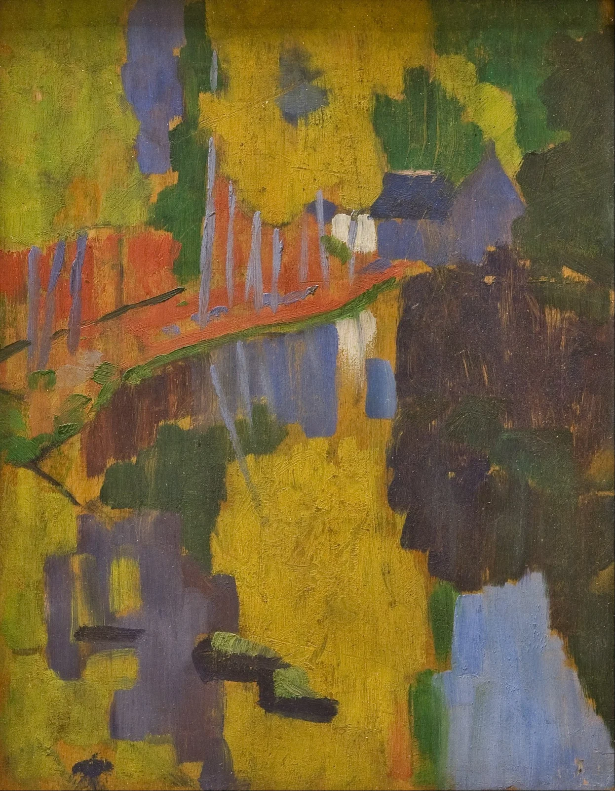

One slanting bank folds the autumn into water.
A diagonal bank guides the eye.
Thin trunks meet broad reflections.
A field of yellow meets blue-violet.
Near-complements gain tension; green steadies it.
Little modelling. Strong value shifts.
Yellow brightens beside the darker patches.
Oil on wood; no underdrawing found.
Brush shaft, ferrule and fingers leave marks.[2]
Paul Sérusier, French, 1864–1927.
This small work became an emblem for the Nabis.[1]
Fewer leaves. The force of autumn remains.
Feel the colour before naming the trees.
One diagonal + four colour groups.
Set the large field; keep one small accent.
Suggested areas: 55 / 20 / 20 / 5
Editorial palette and ratios; not artwork measurements.
Paul Sérusier · 1888
Musée d’Orsay · Oil on wood
Rights remain with their respective holders; image marked Public Domain.
Independent interpretation. Image and factual sources below.
![[3] Image & rights](https://commons.wikimedia.org/wiki/File:Paul_S%C3%A9rusier_-_The_Talisman_-_Google_Art_Project.jpg){kind=link}